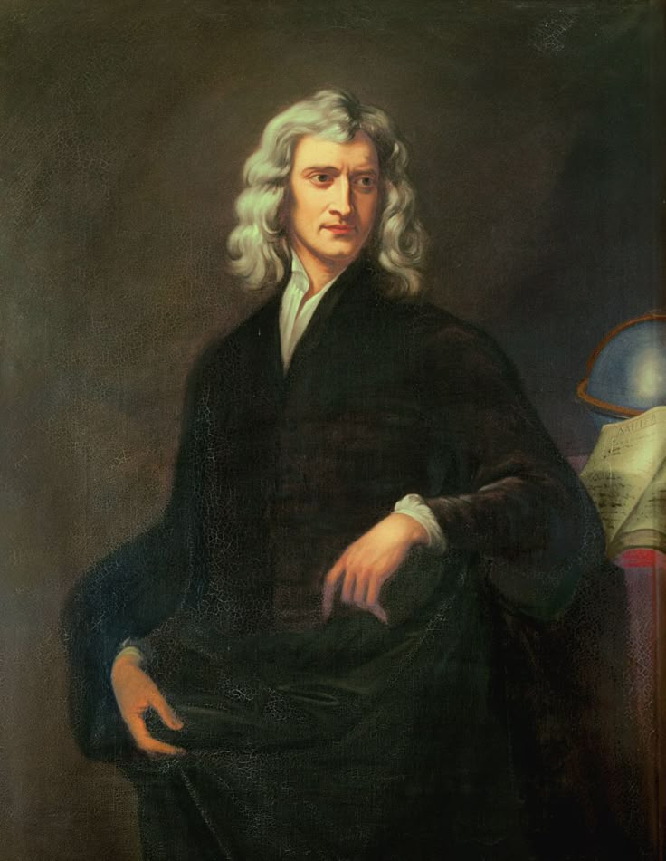

F=G(m₁m₂/r²)
| Year | Event |
|---|---|
| 1643 | Born in Woolsthorpe, England |
| 1665 | Developed early ideas of calculus and gravity |
| 1687 | Published Principia Mathematica |
| 1704 | Published Opticks |
| 1727 | Died in London |
Famous Quote
"If I have seen further it is by standing on the shoulders of giants." Learn More